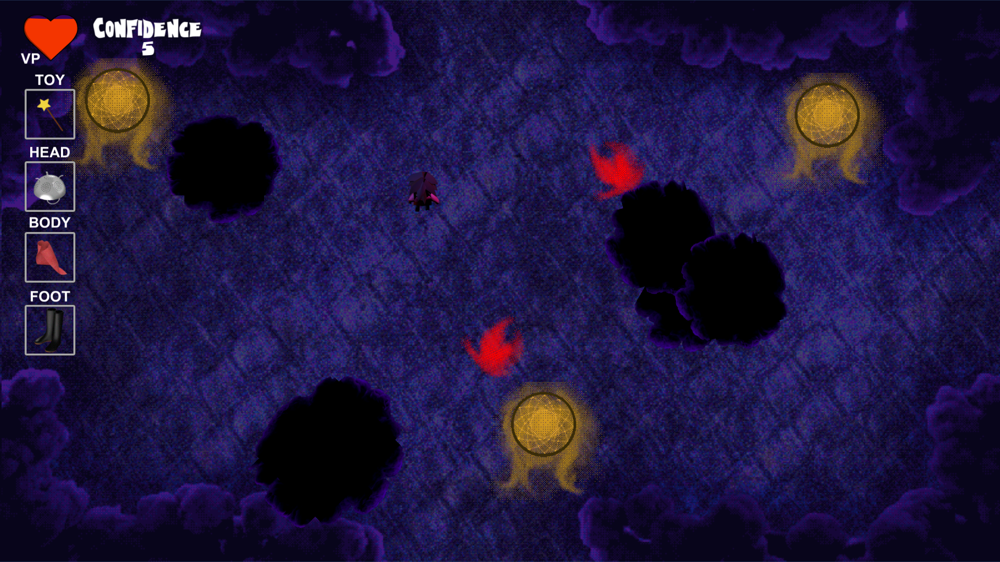
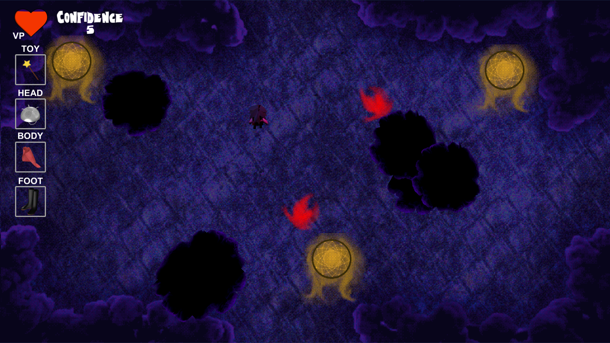

Developers (385 students)
Arsany Azmy
Connor McGwire
Michael Ritchie
Spencer Milener
Art
Connor McGwire
Music
Colin McGwire
Sounds from FreeSound.org
Digging sound (earth platform) - prozaciswack
Planting sound - Hodomostvarujemritam
Wind sound - jimmygu3
Splash sound - angeliqueperdikes
TeamD4D: Sprout
Sprout is an exploration based environmental puzzler.
The player controls a Wood Sprite with elemental powers as it journeys to revive a dead world.
Download Game (PC)

Download Game (Mac)

Download Game Proposal

Download Design Document


B-Team:
Thomas Dye
Cary Kawamoto
Andrew VanKooten
Holden Woelfl
Additional Help From:
Danny Morris
Amani Dye
Lori Collins
The Most Popular Cat on the Internet!
The Most Popular Cat on the Internet! is a casual 2D side-scrolling pattern matching game where you, Piper the cat, gather other cats to help you to win the adoration of your human admirers, to become the most popular cat on YouTube.
Piper has a cushy life with his owner, but he’s ambitious, and decides to strike it out on his own by becoming the most popular cat on YouTube. In order to attain this goal, Piper knows that he has to attract the attention of humans and get them to film him doing cat tricks. However, it turns out that being an Internet cat celebrity is a lot harder than it appears. He decides his way to Internet fame is through his natural leadership abilities and sweet dance moves, and seeks out other cats to join him in his quest for stardom.
Download Game (PC)
 (~54MB)
(~54MB)
Download Game (Mac)
 (~56MB)
(~56MB)
Game Proposal

Design Document


Developers
Griffin Dziok
Jin Lee
Cyrus Sarkosh
Eric Soler
Sound Engineer
David Chang
Artist
Chuck Simpson
TAG:
Ellie is a 2D platform game comprised of different obstacle courses each level. Player will run through the world with different obstacles that will either push or pull (repel or attract) the hero.
The player will evade the obstacles by Ellie's ability to throw magnetic fields that can push or pull other enemies or itself. Ellie is negatively charged, Red objects are positively charged, and blue objects are negatively charged.
Remember that opposite charges attract, like charges repel. The goal of the game is to get through all the levels as fast as you can.
Download Game (PC)

Download Game (Mac)
Download Initial Game Proposal

Download Design Document

Developers Jonathan Earl
Nin Ky
Diem To
Niki Tran
Artist
Niki Tran
Resources
FreeSound.org (Audio)
Flower Power: Adventurous Meemo
Adventurous Meemo is an action platformer game set in a 2D environment. The game world is set in an underwater environment, enemies include giant squids, the user takes the main character through an obstacle by jumping on jellyfishes to advance to the next level. The character moves through the scene by jumping on the tops of jellyfishes. Touching the tentacles or other sea enemies will reduce the character’s health points. The character has 3 life points at the beginning of level 1 and carries through throughout the game. The character can gain more life points by collecting hearts.
In this game, You play as Meemo, a child in search of his lost family. To find them you must bounce through a world full of Jelly Fish, Giant Squid, Pufferfish who stand in your way. You must use your bouncing skills to traverse these obstacles with the help of some Starfish and Bubbles.
Download Game (PC)
Download Game (Mac)
Download Game Proposal
Download Design Document


Jason Herold,
Taran Christensen,
Scott Ferguson,
Tom Graham
Terminal Tactics is a tactical strategy game where the player can customize their team and do virtual battle with
a variety of viruses that threaten your computer.
Download Game (PC)
Download Game (Mac)
Download original game proposal
Download design document
GALACTICAT:
Follow the intrepid space cat "Galacticat" on their epic space adventure through space! Space is full of strange space things with little space love for space cats, but that won't stop Galacticat from having a space blast!
GALACTICAT is a fast-paced arcade-style bullet-hell game. Dodge the incoming rain of projectiles, or block them with your tail. Survive to get a high score, and survive all of the bosses to win!
Download EXE (PC) Download EXE (Mac) Design Document Game Pitch Public Google Drive (Alternate Download Location)
Members
Chad Dugie
Christian Gebhart
Joscelyn Kim
Anthony Pepe
Michael Voght
Defend your dreams by fighting off various enemies and gain experience to equip better gear that helps you traverse farther into your dreams.
Download game (Windows)
Download game (Mac)
Download design document (PDF)
{kind=link}
{kind=link}
 

{kind=link}
{kind=link}
{kind=link}
{kind=link}
{kind=link}
James Becker,
Xavier Chan,
Aaron Gupta,
Keith Pardee,
Andrew Watson,
CurlyFries:
Preservation is fun puzzle based 2d platformer. The player travels back through time and space to exotic and remote locations in order to find and save animals extinct in yout time! In these locations, In these locations you will have to navigate treacherous chasms and use your wits to overcome obstacles. Keeping your Scanner locked on to your animal subjects is vital to safely transporting them back to the future, but they may not take kindly to your presence. Dodge and avoid their aggressive reactions, and save as many animals as you can.
Download Game (PC)
Download Game (Mac)
Download Game Proposal

Download Design Document
Programmers (CSS 385 students) Robert Griswold
Samuel Williams
Artists
Harrision McGuire
Ryu Muthui - UWB
Sound
Kiddpark @ freesounds.org
Enric592 @ freesounds.org
PatrickLieberkind @ freesounds.org
GabrielAraujo @ freesounds.org
Music
Swaying Daisies @ purple-planet.com
Meta Games:
Seattle Towers is a tower construction and management simulator set in the heart of Seattle where the player is constructing a multi-purpose tower that hopes to overshadow the iconic space needle in both height and popularity. The game encourages the player to be strategic about the design of each tower due to the focus on room to room interactions that affect popularity and revenue. The player advances by investing into a research tree that unlocks various rooms, or passives, to strategically maximize profits. It is up to the player to decide whether their tower will specialize or diversify.
Download Game (PC)
Download Game (Mac)
Download Game Proposal
Download Design Document